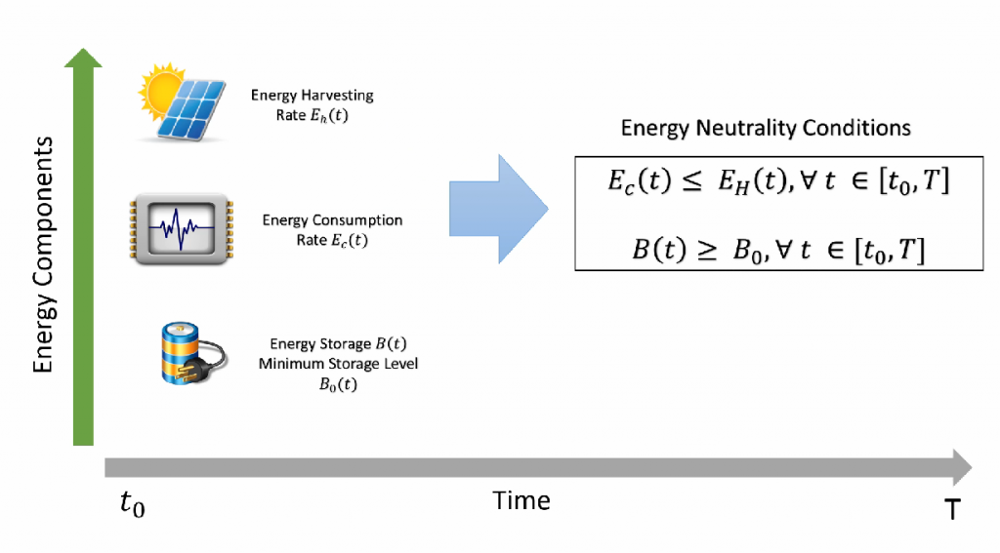

Energy neutrality constraints deals with the relationship among the three different types of energy: the energy harvested by the harvesting device, the energy consumed by the sensor and the energy stored in the battery/supercapacitor. This relationship can be described through mathematical models, which helps to understand the energy behaviour and the amount of available energy for the next time slots. These models can then be used by an optimisation algorithm, such as an energy-neutral MAC protocol or task scheduling, to dynamically adapt the sensor or network behaviour. An energy neutral optimisation methodology, therefore, must have an optimisation algorithm associated with a good energy model in order to achieve better results.
In all the work of AESE, we take the use of energy into account for protocols, algorithms, and other schemes. However, our ENO works specifically involve the use of battery-less or harvested solutions to sensing systems. This includes energy from solar or other traditional sources and indeed more recently the ability to obtain energy from the ambient environment. These are hoped to enable sustainable operation for sensing applications such as Smart Cities, Digi Agriculture and Space sensing.
Main Contributors
